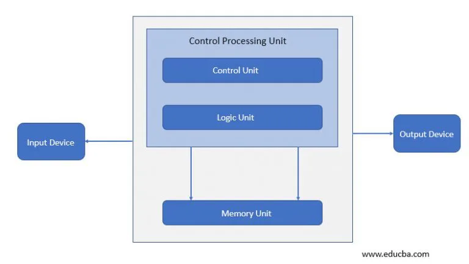
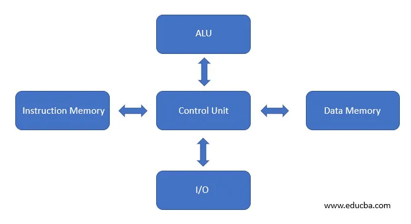
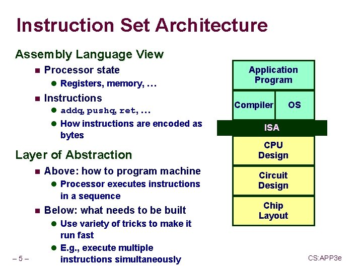
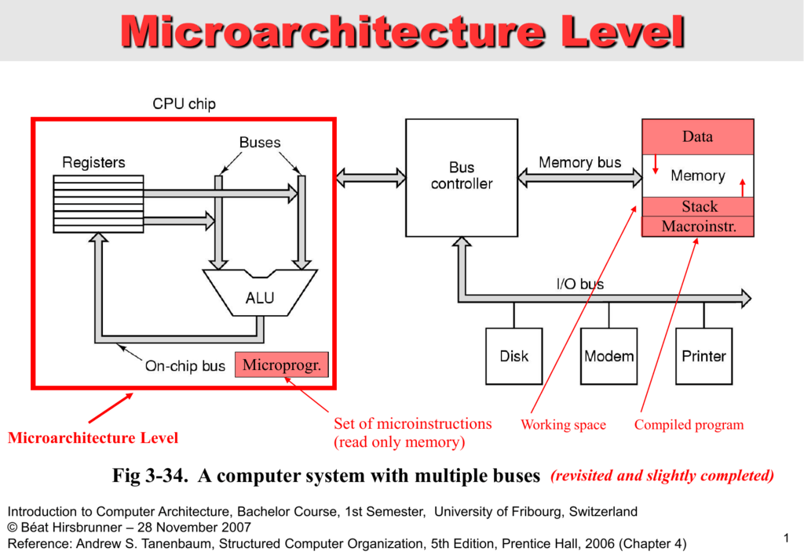

Computer architecture consists of rules and methods or procedures which describe the implementation, functionality of the computer systems. Architecture is built as per the user’s needs by taking care of the economic and financial constraints. Earlier architecture is designed on paper built with hardware form. After it is built-in transistor-transistor logic the architecture is built, tested and formed in the hardware form. We can define computer architecture based on its performance, efficiency, reliability, and cost of the computer system. It deals with software and hardware technology standards. The computer system has the processor, memory, I/O devices and communication channels that connect to it.
| type | image |
|---|---|
| Von-Neumann Architecture |  |
| Harvard Architecturer |  |
| Instruction Set Architecturer |  |
| Microarchitecturer |  |
| System Designr |